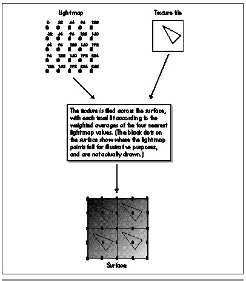

| Previous | Table of Contents | Next |
Quake’s approach, which I’ll call surface-based lighting, preprocesses differently, and adds an extra rendering step. During off-line preprocessing, a grid, called a light map, is calculated for each polygon in the world, with a lighting value every 16 texels horizontally and vertically. This lighting is done by casting light from all the nearby lights in the world to each of the grid points on the polygon, and summing the results for each grid point. The Quake preprocessor filters the values, so shadow edges don’t have a stair-step appearance (a technique suggested by Billy Zelsnack); additional preprocessing could be done, for example Phong shading to make surfaces appear smoothly curved. Then, at runtime, the polygon’s texture is tiled into a buffer, with each texel lit according to the weighted average intensities of the four nearest light map points, as shown in Figure 68.3. If dynamic lighting is needed, the light map is modified accordingly before the buffer, which I’ll call a surface, is built. Then the polygon is drawn with perspective texture mapping, with the surface serving as the input texture, and with no lighting performed during the texture mapping.
So what does surface-based lighting buy us? First and foremost, it provides consistent, perspective-correct lighting, eliminating all rotational, viewing, and clipping variance, because lighting is done in surface space rather than in screen space. By lighting in surface space, we bind the lighting to the texels in an invariant way, and then the lighting gets a free ride through the perspective texture mapper and ends up perfectly matched to the texels. Surface-based lighting also supports good, although not perfect, detail for overlapping lights and shadows. The 16-texel grid has a resolution of two feet in the Quake frame of reference, and this relatively fine resolution, together with the filtering performed when the light map is built, is sufficient to support complex shadows with smoothly fading edges. Additionally, surface-based lighting eliminates lighting glitches at t-junctions, because lighting is unrelated to vertices. In short, surface-based lighting meets all of Quake’s visual quality goals, which leaves only one question: How does it perform?
As it turns out, the raw speed of surface-based lighting is pretty good. Although an extra step is required to build the surface, moving lighting and tiling into a separate loop from texture mapping allows each of the two loops to be optimized very effectively, with almost all variables kept in registers. The surface-building inner loop is particularly efficient, because it consists of nothing more than interpolating intensity, combining it with a texel and using the result to look up a lit texel color, and storing the results with a dword write every four texels. In assembly language, we got this code down to 2.25 cycles per lit texel in Quake. Similarly, the texture-mapping inner loop, which overlaps an FDIV for floating-point perspective correction with integer pixel drawing in 16-pixel bursts, has been squeezed down to 7.5 cycles per pixel on a Pentium, so the combined inner loop times for building and drawing a surface is roughly in the neighborhood of 10 cycles per pixel. It’s certainly possible to write a Gouraud-shaded perspective-correct texture mapper that’s somewhat faster than 10 cycles, but 10 cycles/pixel is fast enough to do 40 frames/second at 640x400 on a Pentium/100, so the cycle counts of surface-based lighting are acceptable. It’s worth noting that it’s possible to write a one-pass texture mapper that does approximately perspective-correct lighting. However, I have yet to hear of or devise such an inner loop that isn’t complicated and full of special cases, which makes it hard to optimize; worse, this approach doesn’t work well with the procedural and post-processing techniques I’ll discuss shortly.

Figure 68.3 Tiling the texture and lighting the texels from the light map.
Moreover, surface-based lighting tends to spend more of its time in inner loops, because polygons can have any number of sides and don’t need to be split into multiple smaller polygons for lighting purposes; this reduces the amount of transformation and projection that are required, and makes polygon spans longer. So the performance of surface-based lighting stacks up very well indeed—except for caching.
I mentioned earlier that a 64x64 texture tile fits nicely in the processor cache. A typical surface doesn’t. Every texel in every surface is unique, so even at 320x200 resolution, something on the rough order of 64,000 texels must be read in order to draw a single scene. (The number actually varies quite a bit, as discussed below, but 64,000 is in the ballpark.) This means that on a Pentium, we’re guaranteed to miss the cache once every 32 texels, and the number can be considerably worse than that if the texture access patterns are such that we don’t use every texel in a given cache line before that data gets thrown out of the cache. Then, too, when a surface is built, the surface buffer won’t be in the cache, so the writes will be uncached writes that have to go to main memory, then get read back from main memory at texture mapping time, potentially slowing things further still. All this together makes the combination of surface building and unlit texture mapping a potential performance problem, but that never posed a problem during the development of Quake, thanks to surface caching.
When he thought of surface-based lighting, John immediately realized that surface building would be relatively expensive. (In fact, he assumed it would be considerably more expensive than it actually turned out to be with full assembly-language optimization.) Consequently, his design included the concept of caching surfaces, so that if the same surface were visible in the next frame, it could be reused without having to be rebuilt.
With surface rebuilding needed only rarely, thanks to surface caching, Quake’s rasterization speed is generally the speed of the unlit, perspective-correct texture-mapping inner loop, which suffers from more cache misses than Gouraud-shaded, tiled texture mapping, but doesn’t have the overhead of Gouraud shading, and allows the use of larger polygons. In the worst case, where everything in a frame is a new surface, the speed of the surface-caching approach is somewhat slower than Gouraud shading, but generally surface caching provides equal or better performance, so once surface caching was implemented in Quake, performance was no longer a problem—but size became a concern.
| Previous | Table of Contents | Next |